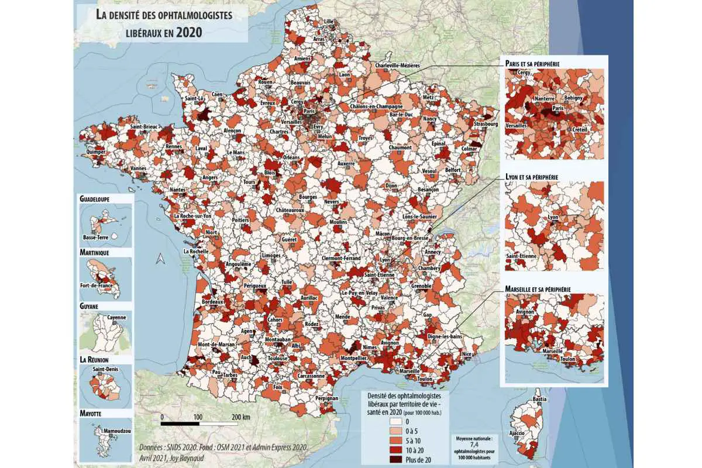
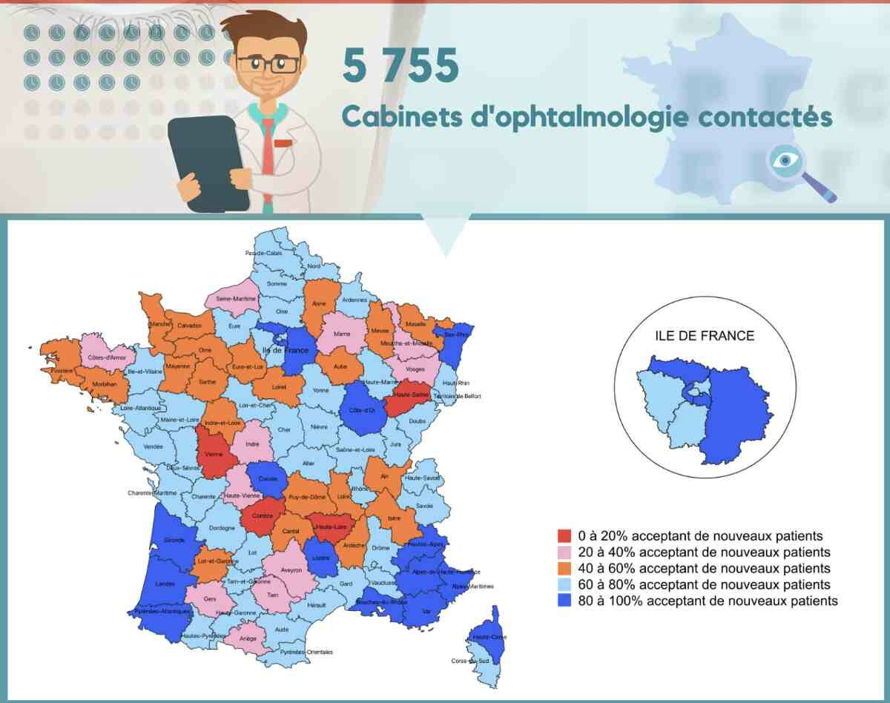
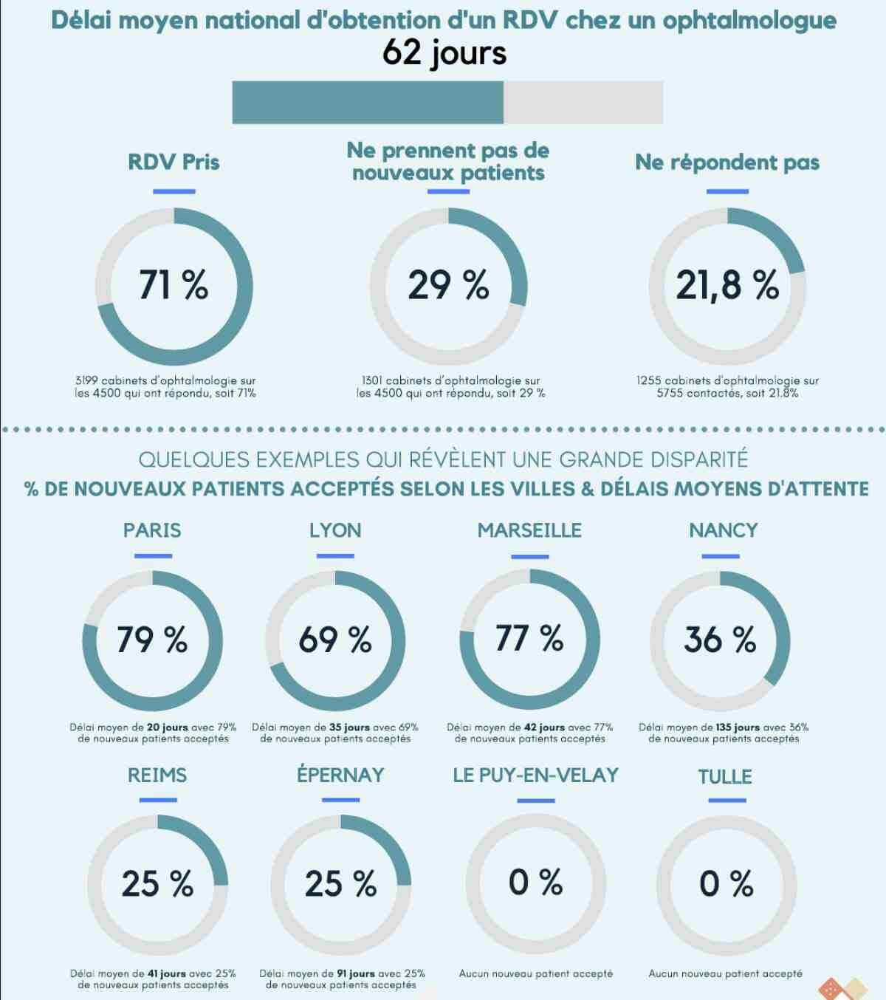
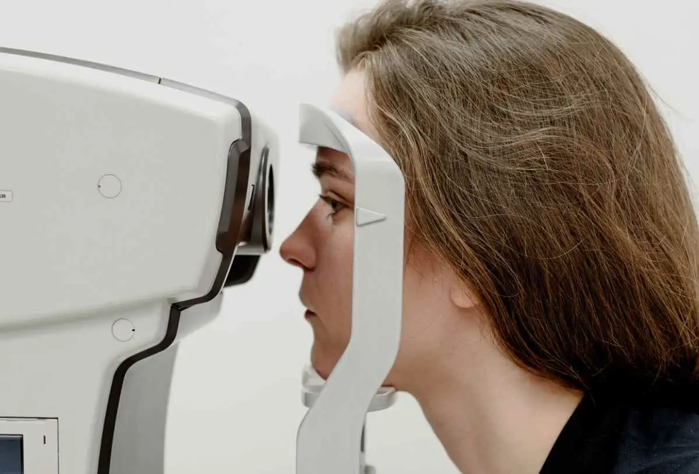

Ophtalmologie : déserts médicaux et délais d'attente moyens
Qu'est-ce qu'un désert médical en ophtalmologie ?
Les difficultés d’accès aux soins en ophtalmologie sont indéniables et sont la plupart du temps la conséquence de zones médicalement sous-dotées en ophtalmologues. Mais peut-on pour autant qualifier des territoires de vie-santé ou des bassins de vie de déserts médicaux en ophtalmologie ?
L'expression "désert médical" se veut avant tout médiatique [1] et il est plus exact de parler de zones « sous-denses » en médecins ou médicalement fragiles à l'échelle du bassin de vie.
En général, un territoire de santé médicalement sous-doté est défini par un territoire où la densité médicale est inférieure de plus de 30 % à la moyenne nationale [2]. Un désert médical en ophtalmologie, si tant est qu'on puisse le définir, serait un bassin de vie ou un territoire de vie-santé dans lequel on ne trouve pas d'ophtalmologues.
Ophtalmologistes et déserts médicaux
La densité des ophtalmologistes libéraux en France est de 7,4 pour 100 000 habitants (8,7 pour l’ensemble des ophtalmologistes).
2 848 territoires de vie- santé (TVS) sont dénombrés en France et la cartographie du Syndicat National des Ophtalmologistes de France (SNOF) met en évidence que de nombreux TVS et bassins de vie souffrent d'un manque d'ophtalmologue libéral.

Le SNOF définit les territoires prioritaires à l'installation comme des zones où la densité ophtalmologique est inférieure à 5 / 100 000 habitants. Ce ne sont pas des déserts médicaux mais des zones sous-denses en ophtalmologie.
Sur la carte, il est facile d'observer que les difficultés d'accès aux soins en ophtalmologie sont avant tout une question de territorialité. Des écarts très significatifs sont relevés entre les départements aux densités les plus fortes (Sud-Est, Rhône, Paris, etc.) et les départements avec de plus petites agglomérations (Creuse, Lozère, Meuse, Ardennes, etc.).
Les zones d’installations les plus attractives restent tout de même les régions Ile-de-France, Auvergne-Rhône-Alpes et PACA.
11 % des ophtalmologistes exercent aujourd’hui dans les aires urbaines ou rurales de moins de 50 000 habitants qui représentent pourtant 19% de la population totale.
En revanche, plus de quatre cinquièmes de la population résident à moins de vingt minutes de l'ophtalmologue le plus proche : c'est le spécialiste la plus accessible géographiquement [3]. Cet avantage évite à de nombreux bassins de vie d'être qualifiés de déserts médicaux en ophtalmologie.
Toutefois, il serait hasardeux de définir un désert médical ou un territoire de vie-santé sous-doté uniquement par les notions de démographie professionnelle et de distance d’accès à l'ophtalmologiste le plus proche, qu'elle soit mesurée en temps ou en kilomètres ?
Le délai d’attente pour obtenir un rendez-vous avec un ophtalmologue doit être pris en compte dans la définition de désert médical. Notre étude va le démontrer tout en mettant en exergue la notion d'acceptation de nouveaux patients en ophtalmologie.

Comment avoir un RDV chez l'ophtalmologue rapidement ?
Force est de constater que cette année encore, malgré une moyenne nationale de 62 jours de délai d'obtention d'un rendez-vous (RDV) chez l'ophtalmologue, il existe une inégalité géographique au niveau des délais d’attente. Les délais sont encore trop longs dans les moyennes et petites villes et c'est dans les petites villes de moins de 50 000 habitants que les concentrent les difficultés à consulter un ophtalmologiste.
Prise de rendez-vous pour une consultation en ophtalmologie
Des délais de 1 à 563 jours !
Il faudra s'armer de patience en Indre, en Lozère ou dans le Cantal avec respectivement 217, 201 et 193 jours d'attente. A contrario, Paris avec 20 jours, les Alpes-Maritimes avec 27 jours ou la Seine-Saint-Denis avec 29 jours présentent des délais d'attente très bas.
A Cannes La Bocca ou à Paris La Défense, nous avons obtenu un rendez-vous à 1 jour. En revanche, à Montargis, impossible d’avoir un rendez-avant 18 mois.
Avoir un rendez-vous rapidement avec un ophtalmologue ne doit pas nécessiter d'habiter dans une commune bien lotie ! D'après l'étude du SNOF [3], entre 2018 et 2020, ce sont les territoires peu denses de moins de 5 ophtalmologistes libéraux pour 100 000 habitants qui ont bénéficié de la première installation d'ophtalmologistes : 16% s’y sont installés, alors qu’on y retrouve seulement 8% des ophtalmologistes de France. Ainsi, en 3 ans, il a été constaté une amélioration du maillage sur l’ensemble du territoire et notamment sur les territoires ruraux.
Les Centres ophtalmologiques
Toujours d'après l'étude récente du SNOF, les premières installations dans ces chaines de cabinets (qui représentent 15% de l’ensemble) l'ont été principalement dans des agglomérations importantes d'où leur faible contribution à l’amélioration du maillage territorial.

Comment obtenir un rendez-vous chez l'ophtalmologue
Résultats de l'enquête nationale
Bien que le nombre d’ophtalmologistes libéraux exerçant dans un cabinet principal soit de 4 540 en 2020, nous avons réalisé une enquête « patient mystère » à l’échelle nationale auprès de 5755 cabinets d’ophtalmologues conventionnés. Cet ensemble comprend les cabinets principaux et les cabinets secondaires.
Au delà des délais d'attente moyens, nous avons porté notre focus sur le taux d'acceptation de nouveaux patients.
Numéro ophtalmo ou ophtalmo en ligne ?
Ce qui est le plus surprenant dans notre enquête, au-delà des cabinets qui ne prennent pas en charge de nouveaux patients (et notamment en Normandie ou en Bretagne), c'est le fait que 1255 cabinets sur 5755 contactés ne répondent pas au téléphone malgré 5 tentatives d'appels.
Nous avons investigué et il ressort que 803 cabinets d'ophtalmologie n'ont ni numéro de téléphone ni agenda en ligne....
Seuls 114 cabinets sur les 1255 injoignables par téléphone ont des rendez-vous en ligne disponibles pour les nouveaux patients !
RDV ophtalmo Toulouse, Lyon, Rouen, Nantes, Lille, Marseille, Poitiers, etc.
Notre infographie ne montre que les départements et ne porte que sur le taux d'acceptation de nouveaux patients.
Application pour un rendez-vous chez l'ophtalmologue prés de chez moi
Les délais d'attente par ville sont tous disponibles sur l'application Doc Le Guide Santé, téléchargeable gratuitement sur Apple Store et Google Play.
Les résultats de l'enquête sont unitaires et géolocalisés puisque chaque ophtalmologue libéral de France dispose d'une fiche indiquant son délai d'attente moyen et si le cabinet prend en charge ou non les nouveaux patients.
Les usagers de santé pourront vérifier par eux-même avec l'application que dans certains villes comme Brive-la-Gaillarde, Le Puy-en-Velay, Montbéliard, Rodez, Tulle, Vandœuvre-lès-Nancy ou encore Yssingeaux, il est presque impossible d'être accepté comme nouveau patient en ophtalmologie.

Ophtalmologue : consultation sans rendez-vous en urgence
Nous précisons toutefois que lors de notre enquête client-mystère, nous n'avons pas demandé à être reçu dans le cadre d'une urgence et plus exactement d'une pathologie aigüe non programmée.
Infographie : "Taux de prise en charge de nouveaux patients en ophtalmologie en France en 2021"
Les propositions du SNOF pour lutter contre les déserts médicaux
« Depuis deux ans, il y a plus d’arrivées que de départs », a déclaré Thierry Bour, président du syndicat, lors d’une interview téléphonique récente.
Le Dr T. Bour a également confirmé les grandes lignes du plan d’action du SNOF pour reconquérir, dans les cinq ans, les zones médicalement sous-dotées [4]. Nous approuvons sans réserve l'ensemble des propositions.
Voici celles que nous avons retenu d'une part pour leur efficacité car elles ont déjà fait leur preuves et d'autre part pour leur engagement en matière de santé publique.
Notre opinion est simple : on ne peut pas demander plus aux médecins qu'aux autres, pour tous les médecins en général, et en particulier pour les ophtalmologues.
Toutefois, si malgré la mise en place de toutes les mesures qui vont suivre, il est constaté que les délais d'attente ne s'améliorent pas dans les régions et départements moins bien lotis ou pire, que le taux d'acceptation de nouveaux patients restent entre 0 et 20%, la liberté d'installation pourrait être remise en cause par le zonage voire la régulation. Ce n'est pas notre souhait mais c'est le risque à court terme si la situation s'aggrave dans les zones sous-dotées voire dans certains agglomérations où des comportements de type "rente de situation" ont été relevés.
Favoriser l’installation de jeunes ophtalmologistes dans les zones sous-dotées
Les premières installations doivent se faire dans des cabinets suffisamment bien équipés et avec suffisamment de collaborateurs (orthoptistes, secrétaires, infirmiers, assistants médicaux) afin de permettre de couvrir la moitié des besoins oculaires de la population en zone sous-dotée.
Développer les cabinets secondaires afin de réduire les zones sous-dotées
Le développement de sites secondaires avec présence au moins partielle d’ophtalmologistes est la solution préférée des ophtalmologues libéraux : le médecin se déplacera régulièrement tout en s'appuyant sur le présence d' orthoptiste(s) agissant sur protocoles validés dans des situations déterminées.
Préconisations du SNOF en termes de moyens
Définir les zones concernées
- La priorité pour des aides à l'installation de l’Assurance maladie doit être donnée aux territoires de vie santé où la densité en ophtalmologistes est inférieure à 5 pour 100 000 habitants
Rendre ces zones éligibles aux aides démographiques définies par la Convention Médicale de 2016
- Le contrat d’aide à l’installation (CAIM) pour favoriser l’installation de jeunes ophtalmologistes.
- Le contrat de transition COTRAM pour encourager la transmission d’un cabinet à un jeune ophtalmologiste.
- Le Contrat Collectif pour les Soins Visuels (CCSV) (réservés actuellement aux Maisons de Santé et aux Centres de Santé) devrait être accessible aux cabinets d’ophtalmologie des zones sous-denses.
RDV ophtalmo rapide : les dérives
Avoir des rendez-vous rapidement et à bas prix (par le tiers payant généralisé) peut amener sur un dévoiement du cercle vertueux de la prise en charge rapide de nouveaux patients.
Le SNOF alerte depuis 2 ans sur les pratiques de ces centres de santé « nouvelle génération » employant des médecins et des orthoptistes salariés [5].
Certains d’entre eux continuent de multiplier les actes non pertinents par patient et pratiquent des facturations anormales : double facturation pour un même acte, 5 actes facturés au cours d'une même séance, facturation d’une même série d’actes à tous les membres d’une famille le même jour. Et dans la plupart des cas, aucune facture n’est délivrée sur le moment !
Le SNOF alerte depuis Juillet 2020 sur ses pratiques abusives (fraude, abus de cotation, actes non pertinents ou fictifs…) dont certains nouveaux centres de santé en ophtalmologie « nouvelle génération» font preuve. Ces fraudes sociales sont relevées par la CNAM dans son rapport Charges & Produits de juillet 2020 [6].

Interview d'un ophtalmologue
Nous complétons cette étude par une interview d'un ophtalmologue libéral réalisée par la journaliste santé, Christine Colmont.
Le Dr T., ophtalmologiste libéral, ancien hospitalier installé à Paris, a souhaité rester anonyme et nous respectons sa demande.
Son interview illustre parfaitement la situation quotidienne de nombreux ophtalmologues.
Comment avoir un rendez-vous avec vous, ophtalmologiste, rapidement ?
Une grande partie des nouveaux patients me sont envoyés par les opticiens. J’exerce dans une partie de Paris où ils sont très nombreux. Ces opticiens m’envoient des personnes spontanément.
Cependant, compte-tenu de la demande de rendez-vous en augmentation, je dois souvent refuser les nouveaux patients. Je suis tout seul et n’ai ni secrétaire, ni orthoptiste pour m’épauler. Pendant le premier confinement, j’avais fermé mon cabinet pendant 2 mois car les copropriétaires de l’immeuble refusaient les allers et venues, et craignaient d’être potentiellement infectés par le COVID.
Je recommençais à travailler normalement ensuite mais je respectais le couvre-feu et ne prenais pas de rendez-vous en fin de journée.
Quels sont les délais d’attente ?
Je ne donne pas de rendez-vous six mois à l’avance. Car parallèlement à mes consultations, je travaille pour un laboratoire d’évaluation d’essais cliniques et j’ai donc besoin de dégager une ou deux demi-journées par semaine.
Quand une personne vient consulter, je ne refixe pas de date pour la revoir ultérieurement. Elle devra me téléphoner, envoyer un mail ou passer au cabinet pour reprendre rendez-vous.
Au début, j’avais pris un secrétariat et tout se passait bien mais le centre d’appel a été transféré à l’étranger et le service n’a plus été le même, ni de la même qualité. Certains opérateurs passaient également à côté des urgences ou ne savaient pas expliquer comment accéder au cabinet. J’ai donc arrêté.
Que faire en cas d’urgence ?
Je peux traiter certaines urgences, comme par exemple, le cas d’un collégien qui ne portait pas de gants en manipulant de l’acide chlorhydrique en classe et qui s’est frotté l’œil. Je l’ai reçu tout de suite en consultation et lui ai prescrit un collyre. L’atteinte de la cornée était superficielle.
Mes patients qui ressentent une gêne très forte aux yeux ou sont en situation d’urgence viennent spontanément et je les prends tout de suite en consultation à mon cabinet. En fait, dans la plupart des cas, il s’agit plutôt d’urgence ressentie (lunettes cassées ou perdues) plutôt que de réelle urgence médicale ! J’ai reçu récemment tout de suite un petit garçon de 4 ans, puis ai pris son père en consultation quelques jours plus tard.
Une autre fois, j’ai enlevé un morceau de ferraille dans la cornée d’un mécanicien. Cette urgence qui aurait presque nécessité une intervention en bloc opératoire. Mais cette personne n’avait pas le temps d’aller à l’hôpital et j’ai paré au plus pressé pour éviter une complication. Certains patients viennent trop tard, minimisant les risques pour leurs yeux, font des auto-diagnostics d’une cataracte alors qu’ils ont un décollement de rétine. Certains souffrent d’infections sans s’inquiéter.
Quand je ne peux pas traiter l’urgence, j’envoie les patients à l’hôpital. A Paris, les centres ophtalmologiques recevant des urgences (24h/24) sont le centre national d’ophtalmologie des Quinze-Vingts, la Fondation Adolphe de Rothschild ou l’hôpital Cochin (AP-HP).
Vous travaillez du lundi au vendredi et toute l’année ?
Je me suis installé il y a cinq ans car les conditions d’exercice à l’hôpital se dégradaient. Je suis équipé d’un matériel de pointe. J’effectue environ plus de 25 consultations par jour, du lundi au vendredi, soit environ 140 par semaine. Je ne travaille plus le samedi car je suis épuisé et fatigué de travailler toute la semaine avec un masque.
La période la plus chargée de l’année est septembre. Avec la reprise de l’école certains enfants s’aperçoivent qu’ils ne voient plus au tableau. Avant les vacances de l’été, une consultation sur trois environ concerne les demandes de lunettes de soleil et à la fin de l’année, les porteurs de lentilles viennent avant l’expiration de leurs forfaits de mutuelles.
Les patients viennent-ils de votre quartier ou de très loin ?
Pour venir en consultation, 19% des personnes viennent de province (Le Havre, d’Évreux, de Chartes, d’Orléans, de Reims). Je ne me mets plus mes disponibilités sur Internet car dès que 100 RDV sont proposés, ils sont tous pris d’assaut en 48h.
Mon cabinet est installé au-dessus d’un centre commercial et sa proximité doit jouer en ma faveur. Les provinciaux qui passent le week-end à Paris en profitent pour concentrer plusieurs rendez-vous médicaux, dont une consultation dans mon cabinet. Un opticien du Havre m’envoie des patients en groupe de 5 parfois, lesquels s’arrangent pour partager ensemble les frais de déplacement : l’un prend sa voiture, un autre paie le péage. Et ce sont des personnes sérieuses qui arrivent à l’heure et n’annulent pas leur rendez-vous. Malgré la forte demande, il arrive parfois que certains ne viennent toutefois pas au rendez-vous.
Quand une personne appelle, je ne peux pas toujours la prendre au téléphone. Quand je suis disponible et peux décrocher, je lui demande d’abord si elle est déjà venue, si c’est urgent, s’il faut faire un fond d’œil ou si elle a du diabète (risque de complications comme la rétinopathie diabétique, NDLR). Actuellement, avant les vacances d’été, j’ai tellement de monde que je suis obligé de faire un certain tri. Par exemple, je viens de prendre un rendez-vous pour une patiente pour la semaine prochaine. Je prends aussi des nouveaux patients. Si je travaille pas avec les centres d’ophtalmologie, je récupère certains patients qui ne veulent plus retourner dans ces centres et préfèrent avoir affaire à un ophtalmologiste libéral.
Quelles sont les tranches d’âge les plus fréquentes parmi vos patients ? Assurez-vous des consultations d’Ophtalmo-pédiatrie ?
L’âge de mes patients est essentiellement les plus de 40 ans. En pédiatrie, 10% de mes patients ont moins de 10 ans, je me suis équipé d’appareils pour prendre les mesures à partir de de 3 mois et peux vérifier leur vision en cas de doute des parents et des pédiatres.
En fait, le prix est-il un facteur déterminant dans l’affluence d’un praticien ?
Les praticiens pratiquant le tiers payant (l’Assurance maladie paie directement le médecin) et des honoraires modérés (par exemple 50 euros par consultation) ont plus de demande que les autres. Certains praticiens du 16e arrondissement de Paris dont les consultations culminent à 200 euros ont du mal à recruter plus de 10 patients/jour…
A Paris, seuls 15% des ophtalmo sont en secteur 1 (principalement hôpital public, centre de santé, dispensaire municipaux…). Les patients dont le praticien pratique des dépassements d’honoraires modérés (contrat OPTAM) sont mieux remboursés à la fois par l’Assurance Maladie que par leur mutuelle. Les mutuelles incitent donc les patients à choisir ces praticiens (existence de listes, de réseaux de soin…).

Comment et quand prendre un RDV en ophtalmo : nos conseils
Nous vous livrons quelques conseils à respecter avant de prendre un rendez-vous si vous êtes un nouveau patient.
Quand prendre RDV chez l'ophtalmo ?
- Quand vous consultez votre médecin traitant pour une baisse brutale de l'acuité visuelle non traumatique et sans rapport avec un besoin de correction de la vue ou pour un œil douloureux sans signe de conjonctivite. Dans la plupart des cas, votre médecin contactera un ophtalmologue de son réseau et saura trouver un rendez-vous rapide ;
- En cas suspicion de dégénérescence maculaire liée à l'âge ou si une chirurgie de la cataracte est devenue inévitable ;
- Tous les 2 ans à partir de 50 ans et tous les ans à partir de 60 ans.
Comment prendre rendez-vous par internet ?
- Agenda en ligne du site web du cabinet.
- Plateformes en ligne de prise de RDV médicaux.
A propos du praticien qui vous consulte
Assurez-vous que ce soit un médecin inscrit à l'Ordre ou un interne en stage libéral !
- Vérifiez si l'ophtalmologue qui vous consulte a un badge, ou bien cherchez sur le web s'il affiche sa photo.
- Demandez toujours la facture et vérifiez si l'ordonnance qui vous est remise est au nom du médecin.
- Luttez contre les détournements du modèle des centres de santé en prenant connaissance du Rapport Charges & Produits 2022 de l'assurance maladie et notamment des pages 89 et 90 (Rapport à consulter ou télécharger ici).
- Enfin, gagnez un temps précieux dans vos recherches en utilisant l'application gratuite Doc Le Guide Santé [Apple Store et Google Play]. Aucun cabinet avec rendez-vous dépersonnalisé n'y est recensé et tous les délais d'attente moyens par ophtalmologue sont indiqués dans toutes les communes de France.
Méthodologie de l'enquête
L'ensemble de ces données statistiques proviennent de l'étude menée entre le 10 mai et le 2 juin 2021 par l'équipe du Dr Stéphane BACH.
Une enquête « patient mystère » a été menée à l’échelle nationale auprès de 5755 cabinets d’ophtalmologues conventionnés en exercice sur un total de 7326 cabinets d’ophtalmologie conventionnés (incluant les cabinets secondaires) extraits de la base de données en open data sur le site data.gouv.
Les 1571 cabinets sans numéro de téléphone renseigné n’ont pas pu être contactés.
L’unité statistique correspond à une demande de première consultation au sein d’un cabinet d’ophtalmologie conventionné (appel anonyme « patient mystère »). Le délai moyen d’obtention d’un rendez-vous correspond à la moyenne du délai des rendez-vous disponibles proposés par l’ensemble des 4500 cabinets joignables. Cinq tentatives d’appels ont été réalisées avant de classer un cabinet d’ophtalmologue en « injoignable ».
Les résultats de certains départements (Cantal, Creuse, Lozère) sont à prendre avec prudence car très peu d'ophtalmologistes ont été joints dans ces départements.
Sources
- Déserts médicaux : état des lieux et solutions. https://www.le-guide-sante.org/actualites/sante-publique/deserts-medicaux-etat-des-lieux-solutions
- Comment lutter contre les déserts médicaux ? Trésor-Éco. N°247. Oct. 2019, https://www.tresor.economie.gouv.fr/Articles/2019/10/11/tresor-eco-n-247-comment-lutter-contre-les-deserts-medicaux
- Pour un accès égalitaire aux soins oculaires : la reconquête des territoires en ophtalmologie. Communiqué de presse du SNOF (Syndicat National des Ophtalmologistes de France). Mai 2021. https://www.snof.org/sites/default/files/Présentation%20SNOF_Conférence%20du%202805-2.pdf
- 2021 : La reconquête des territoires en ophtalmologie. SNOF (Syndicat National des Ophtalmologistes de France). Communiqué de presse du 28/05/2021, https://www.snof.org/2021-reconqu-te-des-territoires-en-ophtalmologie
- 2021 : Centres de santé en ophtalmologie : Le SNOF tire la sonnette d'alarme. SNOF (Syndicat National des Ophtalmologistes de France) 20/04/2021, https://www.snof.org/2021-centres-sant-en-ophtalmologie-snof-tire-sonnette-dalarme
- Améliorer la qualité du système de santé et maîtriser les dépenses. Propositions de l’Assurance Maladie pour 2021. Juillet 2020. Assurance Maladie. https://assurance-maladie.ameli.fr/sites/default/files/2020-07_rapport-propositions-pour-2021_assurance-maladie_1.pdf